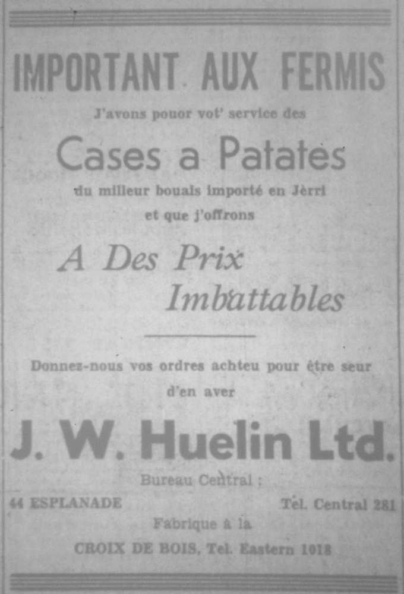
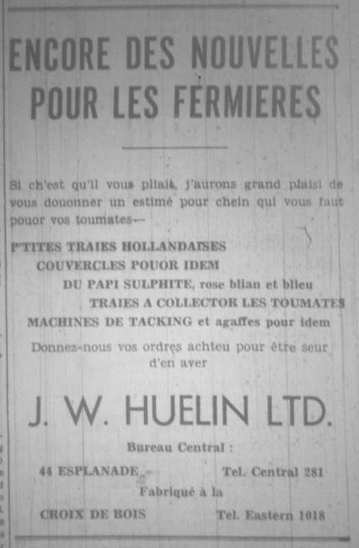

1961
Aux TchultivateursNous avons l'pliaisi de vos annoncer
que nous avons à vot' disposition un stock limité D'mandez également nos prix pour nos caisses à pommes de terre.
Vous pouvez en vais des échantilons à notre siège-
De pus, on peut envyié un d'nos erprésentants siez
J.W. Huelin Ltd. |
Pouor les Toumatesde 22/24 et 24/26 et chein qu'il y a de milleuth couomme "Umbrella Tsinglee." Ch'est d'an- tchi à vous d'nous douonner vos ordres au pus vite viyant que l'stock et limité.
J'pouvons éttouot vous fourni des crouaix, des
44, Esplanade Phone Central 281 |
J.W. Huelin, Ltd.
Si ch'est qu'il vous pliait, j'aurons grand plaisi de Idem Jerriaises, Couvercles pouor idem, Du papi sulphite, rose, blian et blieu, Traies à collecter les toumates, Raffia, filain dit fillis et en jute, Machines de tacking et agaffes pour idem, Fil de fer galvanisé, Crouaix, pitchets et Batons à toumates.
44, Esplanade. Tél. Central 281.
Fabrique à la
Département Agricole: |
Important aux fermis
J'avons pouor vot' service
Donnez-nous vos ordres achteu
J.W. Huelin, Ltd.
Box Factory - Five Oaks 218 |
Conbustibles
Pour vous cauffer ou tchuire votre fricot
J'avons éttouot du coack de touotes
Pouor ètre bein servis donnez vos
J.W. Huelin, Ltd. |
Chroniques de Jersey 1952
Vient d'arrivé en Jerri
Notre stock de chutte année en
Toutes le milleurs marques, y comprins
Nous s'sharge d'ergraie et d'affiler toutes
Choix de graine à flieurs d'la marque Webbs et
Tréjous en stock: une grande quantité d'outils agricoles V'nez vais not' stock.
J.W. Huelin, Ltd. |
Avis aux fermis
J'avons l'grand plaisi de pouver
d'la qualité d'avant djerre et fabriqués
Si ch'est tchi' vos plait, j'pouvons
J.W. Huelin, Ltd. |
Avis aux fermis |
Chroniques de Jersey 1953
1960


Viyiz étout: